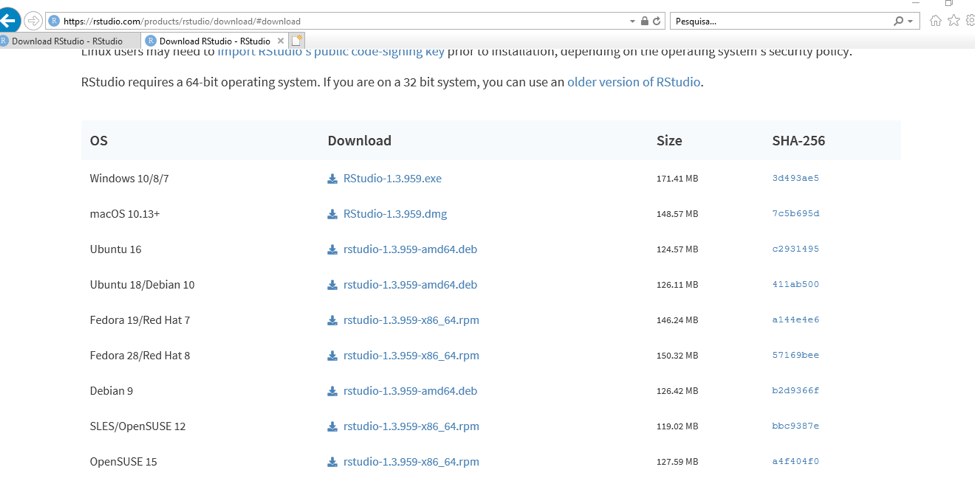

Capítulo 2 Instalando o R e o RStudio
Para trabalhar com R, é necessário instalar dois softwares: R-base e RStudio. Para utilizar o RStudio, é necessário primeiro instalar o R-base.
Siga os passos para instalação de acordo com o sistema operacional do seu computador.
2.1 LINUX
2.1.1 Instalar o R
- Passo 1: Abra o terminal. Se utilizar distribuição Fedora, pressione as teclas Super + T, e no Ubuntu Ctrl + Alt + t;
- Passo 2: Com o terminal aberto digite a seguinte linha de comando:
- Fedora:
sudo dnf install R - Ubuntu:
sudo apt-get install r-base r-base-core
- Fedora:
- Passo 3: Pressione a tecla Enter para confirmar;
- Passo 4: Digite a senha do usuário;
- Passo 5: Clique em Confirmar. Pronto! O R estará instalado e pode ser acessado.
Link para eventual consulta: http://cran-r.c3sl.ufpr.br/bin/linux/
2.1.2 Instalar o RStudio
- Passo 1: Acesse o site https://rstudio.com/products/rstudio/download/
- Passo 2: Encontre na página o local de download gratuito conforme figura abaixo:

- Passo 3: Encontre o sistema operacional do seu computador (Ubuntu, Fedora, Debian ou OpenSUSE) e faça download.
- Passo 4: Acesse o terminal na pasta onde foi feito o download e siga as instruções abaixo usando Fedora ou Ubuntu:
- Fedora:
sudo dnf install nomedo_arquivo_baixado.rpm; Ex:sudo dnf install rstudio-1.3.959-x86_64.rpm - Ubuntu:
sudo dpkg -i nomedo_arquivo_baixado.deb
- Fedora:
- Passo 5: O RStudio está instalado e pronto para uso!
2.2 Mac OS X
2.2.1 Instalar o R
- Passo 1: Abra o site CRAN - https://cran.r-project.org/
- Passo 2: Clique em “Download de R for (Mac) OS X”.
- Passo 3: Clique duas vezes no arquivo depois de baixado. Pronto! O R está instalado.
2.2.2 Instalar o RStudio
- Passo 1: Acesse o site https://rstudio.com/products/rstudio/download/
- Passo 2: Encontre na página o local de download gratuito conforme figura abaixo:
- Passo 3: Encontre o sistema operacional do seu computador (Mac OS) e faça download.
- Passo 4: Depois de baixado, clique duas vezes no arquivo para instalá-lo. O RStudio está instalado e pronto para uso!
2.3 Windows
2.3.1 Instalar o R
- Passo 1: Clique no seguinte link https://cran.r-project.org/bin/windows/base/
- Passo 2: Clique em Download R for Windows (os números que aparecem nesse arquivo de download correspondem à versão do R disponível):
- Passo 3: Clique duas vezes no arquivo depois de baixado. Clique em Avançar até finalizar a instalação. Pronto! O R está instalado.
2.3.2 Instalar o RStudio
- Passo 1: Acesse o site https://rstudio.com/products/rstudio/download/
- Passo 2: Encontre na página o local de download gratuito conforme figura abaixo:
- Passo 3: Encontre o sistema operacional do seu computador (Windows) e faça download.
- Passo 4: Depois de baixado, clique duas vezes no arquivo para instalá-lo. O RStudio está instalado e pronto para uso!
2.4 Identificando o RStudio
O RStudio tem quatro interfaces, espaços distribuídos na sua tela, fáceis de identificar e de trabalhar.
São elas:
- Source: local onde são inseridos os códigos-fonte. Fica no canto superior esquerdo.
- Console: também chamado de terminal, onde são mostrados os resultados dos comandos executados pelos códigos na Source. Fica no canto inferior esquerdo.
- Environment: também chamado de ambiente, onde são mostrados os elementos (por exemplo, vetores, bases de dados etc) que foram criados. Fica no canto superior direito.
- Viewer: também chamado files, onde são mostrados os arquivos, pacotes, pastas, entre outros. Fica no canto inferior direito.

O RStudio possui quatro interfaces, que são as “pequenas telas” ou “janelinhas” que aparecem ao iniciar o programa. Pensando em uma cozinha, o Source seria a receita, o passo-a-passo; o Console seria o fogão, onde tudo está acontecendo, onde se forma o resultado; e o Environment seria uma mesa, onde estão os ingredientes disponíveis. Os pacotes e arquivos ficam no armário com os utensílios de cozinha e ingredientes disponíveis (Files, Packages, …).
2.5 Criando um projeto no RStudio
Uma forma prática de iniciar o trabalho com o RStudio é criando projetos.
Para iniciar um novo projeto:
- Acesse o menu “File > New Project”, ou
- então o ícone na parte superior direita do RStudio.
O RStudio vai perguntar se você quer criar um novo diretório para o projeto, usar um diretório existente, ou ainda clonar um repositório distante (GitHub, por exemplo).
Para criar um novo diretório:
- Clique em “New Directory”, escolha entre as opções de tipos de projeto oferecidas e dê um nome ao seu novo diretório.
Ali, você poderá salvar todos os documentos do projeto.
Ao fechar o RStudio, todos os documentos e os objetos do ambiente serão salvos no projeto, e você pode retomar o trabalho de onde parou quando quiser.
Lembre-se: as bibliotecas devem ser recarregadas cada vez que você iniciar uma seção do R.